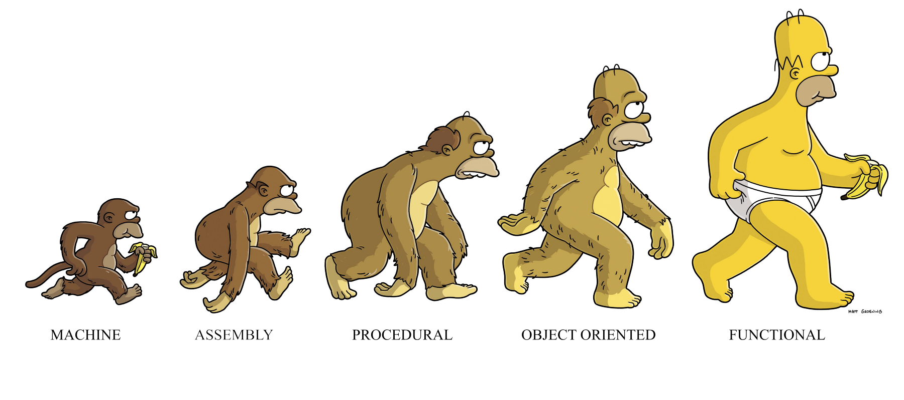

Introduction to Python¶
%matplotlib inline
%config InlineBackend.figure_format='retina'
# import libraries
import numpy as np
import matplotlib as mp
import pandas as pd
import matplotlib.pyplot as plt
import pandas as pd
from importlib import reload
from datetime import datetime
from IPython.display import Image
from IPython.display import display_html
from IPython.display import display
from IPython.display import Math
from IPython.display import Latex
from IPython.display import HTML;
This chapter will not be covered in lecture. It’s here to refresh the memory of those who haven’t used python in a while.
For those that don’t know python – but do know programming – this chapter will give you an idea of how python is similar to, and different from, your favorite programming language.
How do I run code?¶
There are four ways to run python code:
put your code in a file (say program.py) and run
python program.py
This is not a good idea when you are first writing your code
Later, once your code is debugged, this is the way to go
type your code into the python interpreter
This can really help in debugging since you interact with the interpreter and fix mistakes as they happen
good for writing the first version of some new code
Later you can put the code in a file
type in an IDE (Spyder, VStudio) or cut/paste your code in
ipython
This is a good method if you really use the IDE
learn how to use the debugger!
But otherwise it’s not better than option 1
run
ipythonin a browser, using the system calledjupyter notebook
This is even better
All the advantages of
ipythonplus interleaved documentation and graphical outputThat is what these slides are written in
Functions and Methods¶
Function calls use standard syntax:
func(argument1, argument2)
However most things you interact with in python are objects and they have methods. A method is a function that operates on an object:
object.method(argument1, argument2)
Note that the method might modify the object, or it might return a new, different object. You just have to know the method and keep track of what it does.
number_list = [1, 3, 5, 7]
number_list.append(8)
number_list
[1, 3, 5, 7, 8]
string = 'This is a string'
string.split()
['This', 'is', 'a', 'string']
string
'This is a string'
Printing¶
From the interactive python environment:
print("Hello World")
Hello World
From a file:
#!/usr/bin/env python
print("Hello World!")
Hello World!
Data types¶
Basic data types:
Strings
Integers
Floats
Booleans
These are all objects in Python.
a = 7
type(a)
int
b = 3
type(b)
int
c = 3.2
type(c)
float
d = True
type(d)
bool
Python doesn’t require explicitly declared variable types like C and other languages. Python is dynamically typed.
myVar = 'I am a string'
print(myVar)
myVar = 2.3
print(myVar)
I am a string
2.3
Strings¶
String manipulation will be very important for many of the tasks we will do. Here are some important string operations.
A string uses either single quotes or double quotes. Pick one option and be consistent.
'This is a string'
'This is a string'
"This is also a string"
'This is also a string'
The ‘+’ operator concatenates strings.
a = "Hello"
b = " World"
a + b
'Hello World'
Portions of strings are manipulated using indexing (which python calls ‘slicing’).
a = "World"
a[0]
'W'
a[-1]
'd'
"World"[0:4]
'Worl'
a[::-1]
'dlroW'
Some important string functions:
a = "Hello World"
"-".join(a)
'H-e-l-l-o- -W-o-r-l-d'
a.startswith("Wo")
False
a.endswith("rld")
True
a.replace("o","0").replace("d","[)").replace("l","1")
'He110 W0r1[)'
a.split()
['Hello', 'World']
a.split('o')
['Hell', ' W', 'rld']
Strings are an example of an immutable data type. Once you instantiate a string you cannot change any characters in it’s set.
string = "string"
string[-1] = "y" # This will generate and error as we attempt to modify the string
---------------------------------------------------------------------------
TypeError Traceback (most recent call last)
<ipython-input-26-b5fa142bf995> in <module>
1 string = "string"
----> 2 string[-1] = "y" # This will generate and error as we attempt to modify the string
TypeError: 'str' object does not support item assignment
To create a string with embedded objects use the .format() method:
course_name = 'CS506'
enrollment = 90
percent_full = 100.0
'The course {} has an enrollment of {} and is {} percent full.'.format(
course_name,enrollment,percent_full)
'The course CS506 has an enrollment of 90 and is 100.0 percent full.'
A special formatting called an f-string allows you to print out variables very conveniently:
f'The course {course_name} has an enrollment of {enrollment} and is {percent_full} percent full.'
'The course CS506 has an enrollment of 90 and is 100.0 percent full.'
Code Structure¶
Python uses indents and whitespace to group statements together. To write a short loop in C, you might use:
for (i = 0, i < 5, i++){
printf("Hi! \n");
}
Python does not use curly braces like C, so the same program as above is written in Python as follows:
for i in range(5):
print("Hi")
Hi
Hi
Hi
Hi
Hi
If you have nested for-loops, there is a further indent for the inner loop.
for i in range(3):
for j in range(3):
print(i, j)
print("This statement is within the i-loop, but not the j-loop")
0 0
0 1
0 2
This statement is within the i-loop, but not the j-loop
1 0
1 1
1 2
This statement is within the i-loop, but not the j-loop
2 0
2 1
2 2
This statement is within the i-loop, but not the j-loop
File I/O¶
open() and close() are used to access files. However if you use the with statement the file close is automatically done for you.
You should use with.
with open("example.txt", "w") as f:
f.write("Hello World! \n")
f.write("How are you? \n")
f.write("I'm fine. OK.\n")
Reading from a file:
with open("example.txt", "r") as f:
data = f.readlines()
for line in data:
words = line.split()
print(words)
['Hello', 'World!']
['How', 'are', 'you?']
["I'm", 'fine.', 'OK.']
Here is an example of counting the number of lines and words in a file:
lines = 0
words = 0
the_file = "example.txt"
with open(the_file, 'r') as f:
for line in f:
lines += 1
words += len(line.split())
print(f"There are {lines} lines and {words} words in the {the_file} file.")
There are 3 lines and 8 words in the example.txt file.
Lists, Tuples, Sets and Dictionaries¶
Number and strings alone are not enough! We need data types that can hold multiple values.
Lists¶
A list is a collection of data items, which can be of differing types.
Here is an empty list:
groceries = []
A list is mutable, meaning that it can be altered.
Adding to the list:
groceries.append("oranges")
groceries.append("meat")
groceries.append("asparagus")
groceries
['oranges', 'meat', 'asparagus']
Accessing list items by index:
groceries[0]
'oranges'
groceries[2]
'asparagus'
len(groceries)
3
Sort the items in the list:
groceries.sort()
groceries
['asparagus', 'meat', 'oranges']
Remove an item from a list:
groceries.remove('asparagus')
groceries
['meat', 'oranges']
Because lists are mutable, you can arbitrarily modify them.
groceries[0] = 'peanut butter'
groceries
['peanut butter', 'oranges']
List Comprehensions¶
A list comprehension makes a new list from an old list.
It is incredibly useful (learn how to use it!)
groceries = ['asparagus', 'meat', 'oranges']
veggie = [x for x in groceries if x != "meat"]
veggie
['asparagus', 'oranges']
This is the same as:
newlist = []
for x in groceries:
if x != 'meat':
newlist.append(x)
newlist
['asparagus', 'oranges']
Recall the mathematical notation:
L1 = [x**2 for x in range(10)]
L2 = [2**i for i in range(13)]
print(f'L1 is {L1}')
print(f'L2 is {L2}')
L1 is [0, 1, 4, 9, 16, 25, 36, 49, 64, 81]
L2 is [1, 2, 4, 8, 16, 32, 64, 128, 256, 512, 1024, 2048, 4096]
M = [x for x in L1 if x % 2 == 0]
print('M is {}'.format(M))
M is [0, 4, 16, 36, 64]
A sort-of “Sieve of Eratosthenes” in list comprehensions.
Basic idea: generate all composite numbers, remove them from the set of all numbers, and what is left are the prime nnumbers.
composites = [i*j for i in range(2,8) for j in range(2,8)]
primes = [x for x in range(1,50) if x not in composites]
print(primes)
[1, 2, 3, 5, 7, 11, 13, 17, 19, 22, 23, 26, 27, 29, 31, 32, 33, 34, 37, 38, 39, 40, 41, 43, 44, 45, 46, 47, 48]
Notice how much more concise and clear the list comprehension is. It’s more efficient too.
Sets¶
A set is a collecton of items that cannot contain duplicates.
Sets handle operations like sets in mathematics.
numbers = range(10)
numbers = set(numbers)
evens = {0, 2, 4, 6, 8}
odds = numbers - evens
odds
{1, 3, 5, 7, 9}
Sets also support the use of union (|), and intersection (&)
Dictionaries¶
A dictionary is a map of keys to values.
Keys must be unique.
simple_dict = {}
simple_dict['cs506'] = 'data-mining tools'
simple_dict['cs506']
'data-mining tools'
Creating an already-initialized dictionary. Note the use of curly braces.
classes = {
'cs506': 'data-mining tools',
'cs565': 'data-mining algorithms'
}
Check if item is in dictionary
'cs530' in classes
False
Add new item
classes['cs530'] = 'algorithms'
classes['cs530']
'algorithms'
Get just the keys
classes.keys()
dict_keys(['cs506', 'cs565', 'cs530'])
Get just the values
classes.values()
dict_values(['data-mining tools', 'data-mining algorithms', 'algorithms'])
Get the items in the dictionary
classes.items()
dict_items([('cs506', 'data-mining tools'), ('cs565', 'data-mining algorithms'), ('cs530', 'algorithms')])
Get dictionary pairs another way
for key, value in classes.items():
print(key, value)
cs506 data-mining tools
cs565 data-mining algorithms
cs530 algorithms
Dictionaries can be combined to make complex (and very useful) data structures.
Here is a list within a dictionary within a dictionary.
professors = {
"prof1": {
"name": "Evimaria Terzi",
"interests": ["algorithms", "data mining", "machine learning"]
},
"prof2": {
"name": "Mark Crovella",
"interests": ["computer networks", "data mining", "biological networks"]
},
"prof3": {
"name": "George Kollios",
"interests": ["databases", "data mining"]
}
}
for prof in professors:
print('{} is interested in {}.'.format(
professors[prof]["name"],
professors[prof]["interests"][0]))
Evimaria Terzi is interested in algorithms.
Mark Crovella is interested in computer networks.
George Kollios is interested in databases.
Tuples¶
Tuples are an immutable type. Like strings, once you create them, you cannot change them.
Because they are immutabile you can use them as keys in dictionaries.
However, they are similar to lists in that they are a collection of data and that data can be of differing types.
Here is a tuple version of our grocery list.
groceries = ('orange', 'meat', 'asparagus', 2.5, True)
groceries
('orange', 'meat', 'asparagus', 2.5, True)
groceries[2]
'asparagus'
What will happen here?
groceries[2] = 'milk'
---------------------------------------------------------------------------
TypeError Traceback (most recent call last)
<ipython-input-61-9f9c178174f0> in <module>
----> 1 groceries[2] = 'milk'
TypeError: 'tuple' object does not support item assignment
Iterators and Generators¶
We can loop over the elements of a list using for
for i in range(4):
print(i)
0
1
2
3
When we use for for dictionaries it loops over the keys of the dictionary
for k in {'evimaria': 'terzi', 'george': 'kollios'}:
print(k)
evimaria
george
When we use for for strings it loops over the letters of the string:
for l in 'python is magic':
print(l)
p
y
t
h
o
n
i
s
m
a
g
i
c
What do these cases all have in common? All of them are iterable objects.
list({'evimaria': 'terzi', 'george': 'kollios'})
['evimaria', 'george']
list('python is magic')
['p', 'y', 't', 'h', 'o', 'n', ' ', 'i', 's', ' ', 'm', 'a', 'g', 'i', 'c']
'-'.join('evimaria')
'e-v-i-m-a-r-i-a'
'-'.join(['a','b','c'])
'a-b-c'
Defining Functions¶
def displayperson(name,age):
print("My name is {} and I am {} years old.".format(name,age))
return
displayperson("Larry","40")
My name is Larry and I am 40 years old.
Functional Programming¶
{kind=link}
Functional programming is particularly valuable and common when working with data.
We’ll see more sophisticated examples of this sort of programming later.
Lambda functions¶
Python supports the creation of anonymous functions (i.e. functions that are not bound to a name) at runtime, using a construct called lambda.
def f(x):
return x**2
f(8)
64
g = lambda x: x**2
g(8)
64
(lambda x: x**2)(8)
64
The above pieces of code are all equivalent! Note that there is no return statement in the lambda function. Instead there is just a single expression, which defines what the function returns.
A lambda function can take multiple arguments. However it has to get all its work done in a single line of code!
f = lambda x, y : x + y
f(2,3)
5
A lambda function does not need to be assigned to variable, but it can be used within the code wherever a function is expected.
Here is an example of ‘currying’: a function that returns a new function, with some of the original arguments bound.
def multiply (n):
return lambda x: x*n
f = multiply(2)
g = multiply(6)
f
<function __main__.multiply.<locals>.<lambda>(x)>
f(10)
20
g(10)
60
multiply(3)(30)
90
Map¶
Our first example of functional programming will be the map operator:
r = map(func, s)
func is a function and s is a sequence (e.g., a list).
map() returns an object that will apply function func to each of the elements of s.
def dollar2euro(x):
return 0.89*x
def euro2dollar(x):
return 1.12*x
amounts= (100, 200, 300, 400)
dollars = map(dollar2euro, amounts)
list(dollars)
[89.0, 178.0, 267.0, 356.0]
amounts= (100, 200, 300, 400)
euros = map(euro2dollar, amounts)
list(euros)
[112.00000000000001,
224.00000000000003,
336.00000000000006,
448.00000000000006]
list(map(lambda x: 0.89*x, amounts))
[89.0, 178.0, 267.0, 356.0]
map can also be applied to more than one list as long as they are of the same size and type
a = [1,2,3,4,5]
b = [10, 20 , 30, 40, 50]
l1 = map(lambda x,y: x+y, a,b)
list(l1)
[11, 22, 33, 44, 55]
Filter¶
The next functional operator is filter.
filter(function, list) returns a new list containing all the elements of list for which function() evaluates to True.
nums = [i for i in range(100)]
even = filter(lambda x: x%2==0 and x!=0, nums)
print(even)
list(even)
<filter object at 0x7fdbe8dc5350>
[2,
4,
6,
8,
10,
12,
14,
16,
18,
20,
22,
24,
26,
28,
30,
32,
34,
36,
38,
40,
42,
44,
46,
48,
50,
52,
54,
56,
58,
60,
62,
64,
66,
68,
70,
72,
74,
76,
78,
80,
82,
84,
86,
88,
90,
92,
94,
96,
98]
Reduce¶
The last functional operator is reduce().
The job of reduce(function,list) is to return a single value that combines all the elements of the list.
reduce(function, list) sequentially applies function() to its previously returned value, and the next element of list.
For example if list = [a1,a2,a3,...,a10], then the first step of
reduce(function, list) will compute [function(a1,a2),a3,...,a10], and so on.
The function supplied to reduce is typically commutative.
from functools import reduce
reduce(lambda x,y: x+y, [x for x in range(10)])
45
reduce (lambda x,y: x if x>y else y, [1, 15, 26, -27])
26
Libraries¶
Python is a high-level open-source language. But the Python world is inhabited by many packages or libraries that provide useful things like array operations, plotting functions, and much more.
We can (and we will) import many different libraries of functions to expand the capabilities of Python in our programs.
import random
myList = [2, 109, False, 10, "data", 482, "mining"]
random.choice(myList)
'mining'
from random import shuffle
x = list(range(10))
shuffle(x)
x
[8, 7, 5, 2, 6, 1, 0, 3, 4, 9]
APIs¶
For example, there are libraries that make it easy to interact with RESTful APIs.
A RESTful API is a service available on the Internet that uses the HTTP protocol for access.
import requests
width = '200'
height = '300'
response = requests.get('http://loremflickr.com/' + width + '/' + height)
print(response)
with open('img.jpg', 'wb') as f:
f.write(response.content)
<Response [200]>
from IPython.display import Image
Image(filename="img.jpg")